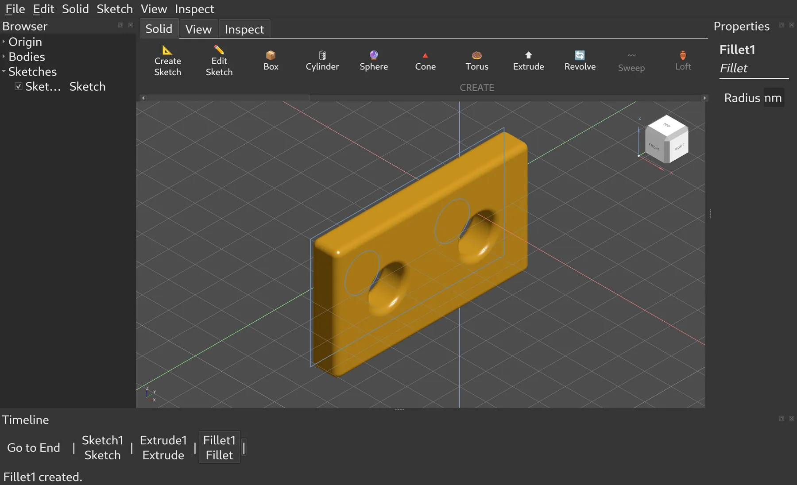

Try it and tell us what breaks
Build it and model something you'd model in Fusion. Every "that's not how Fusion does it" is worth an issue: it's the most valuable input this project can get.
Open an issue →Open-source CAD for Linux · early · looking for help
PenguinCAD copies the way Fusion 360 works (the feature timeline, the marking menu, the shortcut keys) on OpenCASCADE, the open kernel FreeCAD also uses. Today you can sketch, extrude, fillet, drive it all from parameters and save your design. You can't make assemblies or drawings yet, and much of it is rough. If you want this to exist, the quickest way to get there is to help build it.

Install
PenguinCAD ships as a Flatpak, so it runs the same on Fedora, Ubuntu, Arch, Mint or anything else with Flatpak. Remember what it is: an early build, for trying out and for helping, not yet for work you need to keep.
.flatpakref file that tells your system where PenguinCAD lives. For 64-bit PCs (x86-64).
Get penguincad.flatpakref
curl -fsSL https://kaiyao7572-creator.github.io/PenguinCAD/install.sh | shflatpak install --user https://kaiyao7572-creator.github.io/PenguinCAD/penguincad.flatpakrefRather have the whole app in one file? Download the .flatpak (about 22 MB, x86-64) and double-click it; it updates from the same repository. Installed 0.1.0 from a downloaded file? That version can't update itself: run flatpak uninstall --user io.github.kaiyao7572_creator.PenguinCAD//master once, then install as above. Every version is on the releases page, and getting PenguinCAD onto Flathub itself is one of the open jobs.
Why this exists
Fusion 360 taught a lot of people CAD: the timeline you can roll back, the ring of commands under the right mouse button, E for extrude. It doesn't run on Linux, and it keeps your designs in Autodesk's cloud.
The open-source options are real and some are excellent. None of them work the way Fusion does, and for someone who already knows Fusion, relearning a workflow is the hard part of switching.
PenguinCAD's bet is narrow: keep Fusion's interaction model as exactly as possible, on an open kernel, as a native Linux app. It is a long way from that goal. The table on the right is where we'd send you today, and it isn't mostly us.
Comparison
PenguinCAD is the least capable tool on this list. Its row is here so you can see exactly what's missing, and the one column where it's trying to be different.
| Tool | Native on Linux | Open source | Offline, no account | Parametric history | Fusion-style workflow | Assemblies | 2D drawings | CAM | In one line |
|---|---|---|---|---|---|---|---|---|---|
| PenguinCADGPL-3.0 · OCCT | ✓ | ✓ | ✓ | ✓ | ✓ | ✕ | ✕ | ✕ | Fusion's workflow, early. Single parts only, no drawings yet. |
| FreeCADLGPL-2.0+ · OCCT | ✓ | ✓ | ✓ | ✓ | ✕ | ✓ | ✓ | ✓ | Mature and broad, organised into workbenches. Its own workflow. |
| Fusion 360Autodesk · commercial | ✕ | ✕ | ✕ | ✓ | ✓ | ✓ | ✓ | ✓ | The reference. Windows and macOS, cloud account, free for personal use with limits. |
| OnshapePTC · commercial | ~ | ✕ | ✕ | ✓ | ✕ | ✓ | ✓ | ~ | Runs in any browser. Cloud only; the free plan makes documents public. |
| SolidWorksDassault · commercial | ✕ | ✕ | ✓ | ✓ | ✕ | ✓ | ✓ | ✓ | The industry standard. Windows only, and priced for businesses. |
| SolveSpaceGPL-3.0 · own kernel | ✓ | ✓ | ✓ | ✓ | ✕ | ~ | ~ | ~ | Tiny, fast and constraint-first. No fillets on solids. |
| Dune 3DGPL-3.0 · OCCT | ✓ | ✓ | ✓ | ✓ | ✕ | ~ | ✕ | ✕ | A young, Linux-first modeller with SolveSpace's solver. The closest in spirit. |
| Code-CADOpenSCAD · CadQuery · build123d | ✓ | ✓ | ✓ | ✓ | ✕ | ~ | ✕ | ✕ | Parts are programs. Great for reproducible parts, and a different craft from clicking. |
This is our reading as of September 2026, and other projects move fast. If we got something wrong, fix it: this page lives in the repository under website/, and a pull request correcting the table is a perfectly good first contribution.
Where it stands
Screenshots
Help out
Pick whatever matches what you're good at. Everything below is real, unclaimed work, and the list in CONTRIBUTING.md goes into more detail.
Build it and model something you'd model in Fusion. Every "that's not how Fusion does it" is worth an issue: it's the most valuable input this project can get.
Open an issue →Assemblies with joints, or 2D drawings. Each is a document-model project: start with a design discussion in an issue before writing code.
See the details →There's a Flatpak you download by hand. Getting it onto Flathub, and into AppImage, AUR and COPR, would put it one search away. So would running the test suites in CI, next to the Flatpak build that already runs.
See the details →A light theme, a pass over the panels' spacing, a first-model tutorial, this website, and the running audit of where PenguinCAD falls short of Fusion.
Read the audit →./tests/run_tests.sh. It should end with "All test suites passed."Questions
Not yet. It can save and reopen a design now, but there are no assemblies or drawings, and plenty of rough edges. Treat it as something to build on, not something to depend on. If you need a CAD tool for a project this month, use one from the comparison above.
That's a reasonable choice, and FreeCAD is the better tool today. Fusion's feel isn't a theme you can put on top of another program, though. It lives in the selection model, the timeline and the way every command flows, all the way down.
PenguinCAD is a small codebase where that feel is the whole design rather than an option. If you'd rather make FreeCAD more Fusion-like, that's good work too.
Largely, yes, with Claude Code, and the commits say so. That's part of why it needs people: review from someone who knows the code, testing from someone who does CAD every day, and design judgment are exactly what it's short of.
Qt and OpenCASCADE both run there, so nothing fundamental stands in the way, but nobody has tried. It is developed on Fedora and only tested on Linux.
No. It's an independent open-source project that imitates how Fusion 360 feels to use. It shares no code with it.
Build from source
PenguinCAD needs Qt 6 and OpenCASCADE 7.8 or newer. Fedora packages both. On other distributions, making this easy is one of the open jobs above.
sudo dnf install opencascade-devel qt6-qtbase-devel cmake gcc-c++ gitgit clone https://github.com/kaiyao7572-creator/PenguinCAD.git && cd PenguinCADcmake -B build && cmake --build build -j$(nproc) && ./build/penguincadgit clone https://github.com/kaiyao7572-creator/PenguinCAD.git && cd PenguinCADcmake -B build -DOpenCASCADE_DIR=/path/to/occt/lib/cmake/opencascadecmake --build build -j$(nproc) && ./build/penguincadTested on Fedora 44. Built somewhere else? Tell us how it went; a working recipe for your distribution belongs in the README.
Star the repository if you want to follow along. Open an issue if you want to help, even if it's only to say which piece you'd like to take on.